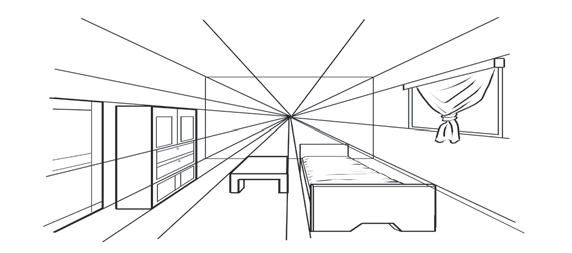
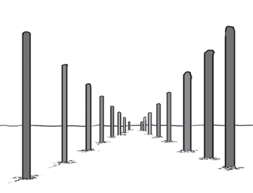

Images that demonstrate distance
Drawing images that show distance requires various techniques of using lines, proportion, and direction of the painter. To draw an image that demonstrates distance, it is important to consider the use of lines, proportion, and direction of the painter. The image in Figures 18 and 19 show the appearance of distance. Examine the use of lines that express distance in these images.



Activity 12
Make a drawing that shows both near and distant objects. Choose a single direction where the lines will meet.